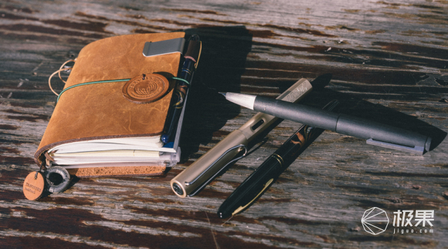

@苏苏
2016-01-25钢笔，作为一个书写工具，像手表一样，不但具有功能性，还拥有了装饰（bi）等功能。不过总有人在死磕钢笔的本质：

初次使用钢笔该如何选择，这是个老生常谈的问题了，具体其实没什么好讲的，因为不但那些昂贵的钢笔，每支都有自己的个性，相对廉价的钢笔更是如此。所以还是要尽量自己去实体店尝试，看看手感是否适合自己。

其次，因为现代许多人都是一直用圆珠笔和中性笔，所以总想要求钢笔的笔迹也要像中性笔一样细，这也算是一个误区，钢笔的笔迹一般都不会很细，其实细的笔尖，品控等方面未必能做好。总之粗细问题习惯就好，毕竟中文字体本来就不太适合很细的笔迹去表现。
再者就是选择的时候，不要觉得金尖的手感就一定比钢尖要好，还是要自己去尝试。还有重量一定要好好考虑，太重的钢笔虽然有的时候手感很好，但是写久了会很累，适合少量高质的书写。 什么是好钢笔

一支钢笔，笔尖分为明尖和暗尖，一般来说明尖会更为软，而暗尖会比较硬。明尖很容易达到软弹的效果，而暗尖则比较容易达到硬滑的效果，日常大量书写的话，更推荐暗尖，不过如果是领导签字，自然需要一款帅气的明尖才行（也不绝对，比如麦克阿瑟使用的派克51，则有一种军人的饱满和刚毅的美感。）

如果说钢笔的灵魂在于笔尖，那么笔尖的灵魂，就在于铱粒了，各厂有各厂不同的铱粒，其组成和打磨都各不相同。其中最有名的犀飞利（西华）其铱粒的耐磨程度其余各厂望尘莫及。大家挑选钢笔最好也考虑下自己的风格，比如说有人将铱粒的打磨分为刀锋打磨和普通的胖头尖，其实并不存在孰优孰劣，只是所谓的刀锋打磨，更容易表现笔画的粗细罢了（相对的书写速度会减慢，磨损也会加快。）各厂不同产地的铱粒，也会有不同，比如派克世纪现产的法产笔尖，就没有英产的耐磨。

而笔杆，有树脂，金属（铝，银，钢等）木质（石楠，各种檀木等）赛璐珞，和覆漆笔杆。个人认为树脂笔杆虽然温润，却没有大漆的那种深邃和纯净感。银杆钢杆等金属笔杆冬天比较冷，但也会使整笔更重，而且银杆虽然很美，但较难保养。木杆很漂亮，却也有开裂的危险。
上墨器的话，活塞上墨理论上来说容量更大，但无法使用墨胆，在现实生活中还是比较麻烦的，上墨容易染一手。气压和上墨器上墨没什么太大差距。
笔身的大小同样是很重要的考虑因素，有的人喜欢大笔，有的人喜欢小笔（大笔普遍偏贵就是了）像我就比较适合使用派克精装世纪（小豆）和百利金m600这个大小的笔。如果手汗比较多，则需要考虑笔握的情况了。像万宝龙的星际行者，他的笔握防滑性能就很好。
这是一款已经被很多人推荐甚至听说已经和kindle一起作为文青的标配的笔。但是，还是得推荐一下，如果没有他这两年这么火，应该也没有现在国内日渐多起来的爱好钢笔的人。（毕竟我也是一支safari一支万宝龙入的坑）不得不说，这支笔的设计是很不错的，完全没有传统观念中钢笔的那种老式感。细节设计也很不错，比如他很有趣的螺纹和上墨器。虽然已经烂大街了，不过写感也确实不算差，是100元左右比较值得购买的一支笔。
三文堂580 这也是在各种网站很常见的一支笔，示范款式，搭配透明度高的彩墨会非常非常漂亮。写感也不错，比较硬滑的风格。不过要注意的是整笔比较大，比较重，手小瘦弱的女生可能不太适合这支笔。再者就是示范钢笔一定要小心不要让它被刮花或者有划痕，小心保管。
英雄100 这就是当年英雄拿来赶超派克51的笔。（非说是100英雄我也没话说）大家普遍的观点是品质逐年下降，但是根据我手上的来看，我有84年的，96年，98年和现产的英雄100，手感最好的98年的金夹款，并没有觉得84年的那只金夹就好到哪里去，现产也没见差到哪里去。所以我想大家倒也不必特别担心这个问题。作为一款暗尖笔，英雄100的手感和外观不得不说是很不错的（特别是金夹），非常值得买来日常使用的笔，英雄100的钢帽很漂亮，很惊艳的感觉，特别是搭配上金夹，简直完美。
白金PTB5000 没有特别的名字，却是非常棒的一支笔，笔身纤细，书写顺畅易出锋，拥有白金那种特殊的手感，阻尼却不像3776那样大。日用很舒服。某宝购买的话，不到300元啦。
玩钢笔也不只是玩钢笔，可能更多的是对一种更优质的生活的追求，想象一下自己工作的地方，都非常精致，这种感觉也是非常棒的。
上一篇：到底有没有完美的iPhone手机配件，答案都在这里
下一篇：他用12年找一把完美 剃须刀，给你2万字终极购买指南

喜欢 15

分享

酷·新奇·好玩·品质
全球酷玩试用导购平台
微信添加“JguoJguo”
获取我们的服务。

免费试用
友情链接
购买攻略
厂商合作